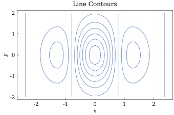
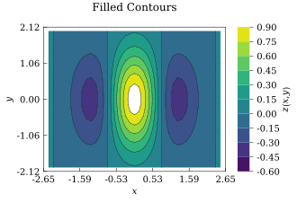
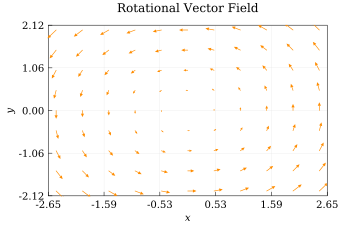
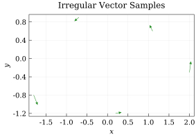
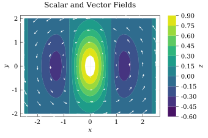

Field Plots Tutorial
Contour plots visualize a scalar field, while quiver plots visualize a vector field. Both accept data on a rectilinear grid and can be combined in the same Chart.
Prepare Grid Data
For grid-based plots, x contains the horizontal coordinates and y contains the vertical coordinates. Every field matrix must have size (length(y), length(x)): rows correspond to y and columns correspond to x.
using QuickCharts
x = collect(range(-2.5, 2.5; length = 41))
y = collect(range(-2.0, 2.0; length = 33))
z = [exp(-(xi^2 + yi^2) / 2) * cos(2xi) for yi in y, xi in x]
u = [-yi for yi in y, xi in x]
v = [xi for yi in y, xi in x]
size(z) == size(u) == size(v) == (length(y), length(x))trueLine Contours
add_contour draws isolines by default. Supply explicit levels, or use nlevels to let QuickCharts choose evenly spaced values from the finite data. The color, line_width, and line_style keywords style the isolines.
line_chart = Chart(
size = (12cm, 8cm),
title = "Line Contours",
background = :white,
xlabel = "`x`",
ylabel = "`y`",
)
add_contour(
line_chart,
x,
y,
z;
levels = -0.6:0.15:0.9,
color = :royal_blue,
line_width = 0.7,
)
save(line_chart, "tutorial-contour-lines.svg")
The coordinate vectors must be strictly monotone. Nonuniform spacing is supported, and non-finite matrix values are left out of the contour geometry.
Filled Contours and Colorbars
Set filled = true to color the bands between levels. Filled contours retain their isolines by default; use line_style = :none for color bands only. colormap accepts a Colormap or a built-in colormap name.
filled_chart = Chart(
size = (12cm, 8cm),
title = "Filled Contours",
background = :white,
xlabel = "`x`",
ylabel = "`y`",
)
add_contour(
filled_chart,
x,
y,
z;
filled = true,
levels = -0.6:0.15:0.9,
colormap = :viridis,
color = :black,
line_width = 0.35,
colorbar = :right,
colorbar_label = "`z(x, y)`",
)
save(filled_chart, "tutorial-contour-filled.svg")
The colorbar can be placed at :left, :right, :top, or :bottom, or disabled with :none. Use colorbar_ticks together with colorbar_tick_labels when the displayed values need custom labels.
Quiver Plots on a Grid
add_quiver(chart, x, y, U, V) places the vector (U[i, j], V[i, j]) at (x[j], y[i]). Vectors are transformed and normalized in screen space, so the field direction remains visually correct even when the axes have different scales. The longest visible vector receives the requested max_length in typographic points.
quiver_chart = Chart(
size = (12cm, 8cm),
title = "Rotational Vector Field",
background = :white,
xlabel = "`x`",
ylabel = "`y`",
)
add_quiver(
quiver_chart,
x,
y,
u,
v;
stride = (4, 4),
color = :dark_orange,
line_width = 0.65,
max_length = 12,
head_length = 3.5,
)
save(quiver_chart, "tutorial-quiver.svg")
Use stride = n to retain every nth point in both directions, or stride = (nx, ny) to thin the horizontal and vertical directions independently. Zero-length and non-finite vectors are not drawn.
Flat Vector Data
Quiver plots also accept four equally sized vectors. This overload is useful for irregularly positioned samples because each element supplies one anchor and one vector:
sample_chart = Chart(
size = (10cm, 7cm),
title = "Irregular Vector Samples",
background = :white,
xlabel = "`x`",
ylabel = "`y`",
)
X = [-1.8, -0.7, 0.2, 1.1, 2.0]
Y = [-0.8, 0.9, -1.2, 0.6, -0.3]
U = -Y
V = X
add_quiver(sample_chart, X, Y, U, V; color = :forest_green, max_length = 16)
save(sample_chart, "tutorial-quiver-flat.svg")
For flat inputs, stride = n retains every nth vector in input order.
Combine Contours and Vectors
Series can be layered by adding them to the same chart. A common pattern is a filled scalar field below a thinned vector field.
combined_chart = Chart(
size = (12cm, 8cm),
title = "Scalar and Vector Fields",
background = :white,
xlabel = "`x`",
ylabel = "`y`",
)
add_contour(
combined_chart,
x,
y,
z;
filled = true,
levels = -0.6:0.15:0.9,
colormap = :viridis,
line_style = :none,
colorbar = :right,
colorbar_label = "`z`",
)
add_quiver(
combined_chart,
x,
y,
u,
v;
stride = (4, 4),
color = :white,
line_width = 0.7,
max_length = 11,
head_length = 3,
)
save(combined_chart, "tutorial-fields-combined.svg")